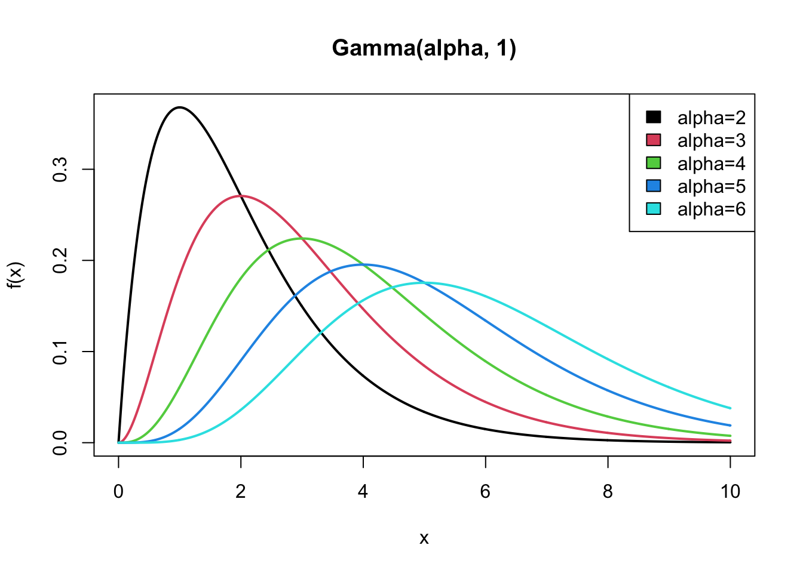

Lecture 5 Poisson model
The following notes are transcribed from Neath(2021) lecture which summarizes Sections(3.1.2 and 3.2) of Hoff(2009).
Suppose \(Y =\) number of facebook friends your neighbor has. There are a large number of people in the world. Some of them are your neighbors facebook friends and some are not. \[ Y_i = \begin{cases} 1 \text{ if the }i\text{th person in the world is a facebook friend of your neighbors}\\ 0 \text{ otherwise} \end{cases} \]
\(Y_i \sim ~\)Binomial(size = number of people in the world). probability = proportion of those people who are facebook friends with your neighbor. This is not a good probability model for this variable, because the size is too big and the probability is too small. What works better in cases like this is the Poisson distribution.
Sample space is { \(0, 1, 2, ...\) }.
probability function is \(e^{-\theta} \times \theta^y / y!, ~ y \in \{~0, 1, 2,...\},\) \(\theta\) is the mean, i.e., expected value of \(Y\).
The Poisson model is a good first thing to think of and first thing to try for count data. A property of the Poisson distribution is; variance = \(\theta\) = mean. When the variance is a little bigger than the mean, Poisson probabilities may still match the observed proportions reasonably closely but when variance is a lot bigger than the mean Poisson distribution is not such a good model.
Let \(Y_i =\) count for \(i\)th unit, { \(i = 1, 2, …, n\) }. If \(Y_i | \theta\) are iid Poisson(\(\theta\)) then the joint probability of \((y_1, y_2, …, y_n)\) depends on the data only though the total value \(\sum{y_i}\). We say the \(\sum{y_i}\) is a sufficient statistic. If you observe the data \(n=3, y =\) c( 1 , 2, 3 ) and I observe \(n = 3,~ y =\) c( 4, 1, 1 ) our inference about \(\theta\) will be exactly the same. It is also a property of Poisson random variables that sums of independent Poisson random variables are distributed as Poisson.
Posterior of \(\theta\) satisfies \[ p(\theta | y_1, ..., y_n) = c_0 \times p(\theta) \times p(y|\theta)=c \times p(\theta) \times \theta^{\sum{y_i}}e^{-n \theta } \]
We’ll work with a conjugate prior because it makes things simple. Looking at \(p(\theta)\times\theta^{\sum{y_i}} e^{-n\theta }\), what could we plug in for \(p(\theta)\) such that \(p(\theta | y)\) will have the same parametric form? well \(p(\theta | y)\) is gonna have a \(\theta^{\text{something}}\) and a something\(^{\theta}\) so the prior can have those things too! What probability distribution for \(\theta > 0\) allows \(\theta^{\text{something}}\) and something\(^{\theta}\)? That would be the gamma distribution \(= \tilde c\times\theta^{a-1} e^{-b \theta}\). In this parameterization \(b\) is the rate parameter, \(1/b\) is the scale parameter.
5.1 Posterior inference for the Poisson model
For our prior on \(\theta\) we’ll say \(\theta \sim\) gamma\((a, b)\).
How do you choose a and b? In general, when considering the question of how to choose a prior look at what the prior leads to in terms of the posterior. Not by peeking at the data though, just by studying the model. i.e., Let’s look at what posterior the gamma\((a, b)\) prior will lead to and then come to the question of what \(a\) and \(b\) should be.
Key Result: If \(\theta \sim \text{gamma}(a,b)\) and \(Y_1,\ldots,Y_n | \theta \sim\) iid Poisson\((\theta)\), then \((\theta | Y_1 = y_1, \ldots, Y_n = y_n) \sim \text{gamma}(a+\sum y_i, b+n)\).
What do \(a\) and \(b\) contribute to the posterior? \(a\) contributes analogously to \(\sum{y_i}\) which is the observed total count \(b\) contributes analogously to \(n\) which is the number of observed counts. Another way to say this: The data consist of \(n\) observations with average value \(\sum{y_i} / n,\) the prior contributes (effectively) \(b\) observations with average value \(a/b\). So in the absence of genuine prior information about \(\theta\) just make sure \(b\) is small relative to \(n\) and it won’t matter very much. Make \(b\) small relative to \(n\) and make \(a/b\) or \((a-1)/b\) your prior “best guess.”
Student question: What’s the difference, definition wise, between \(n\) observations and \(b\) observations?
Ans: The \(n\) observations are real data. The \(b\) observations are not data they’re “pseudo-data” or “prior observations” The value of \(\sum{y_i}\) is determined by the data. The values of \(a\) and \(b\) are chosen by us.
5.2 Posterior predictive distribution
Now suppose we have \(n+1\) observations and our job is to predict the \((n+1)\)st. Let \(\tilde Y\) represent this \((n+1)\)st observation. The conditional distribution of \(\tilde Y|Y_1 = y_1, …, Y_n = y_n\) is called the posterior predictive distribution. Posterior because it depends on the observed data. The distinction between “estimation” and “prediction”; If it’s an observable (but as yet unobserved) quantity it’s a prediction. Like \(\tilde Y;\) the \((n+1)\)st data point that just hasn’t been observed yet. Versus an unknown parameter like \(\theta\) is an unobservable quantity. Inference about \(\theta\) would be called estimation. \[ \begin{aligned} p(\tilde y | y_1,...,y_n) &= \int p(\tilde y,\theta | y_1,...,y_n)d\theta\\ &=\int \texttt{dpois}(\tilde y, \theta) \texttt{dgamma}(\theta, a+\sum y_i, b+n)d\theta \end{aligned} \]
A general result: “A gamma mixture of Poissons is negative binomial.”
One way the negative binomial distribution arises is; \(y =\) number of failures before the \(n\)th success(in Bernoulli trials). This is the same negative binomial distribution as that but not the same motivation and note the “\(n\)” parameter need not be an integer.
\(E (\tilde Y) = E [ E(\tilde Y | \theta) ] = E(\theta).\) Simalarly,
\(\text{Var}[ \tilde Y ] = \text{Var}[ E(\tilde Y | \theta) ] + E[\text{Var}(\tilde Y | \theta) ] = \text{Var}( \theta ) + E (\theta )\) but the posteriors!
5.3 Example: Birth rates
We are comparing two populations. There’s strong evidence that there is a difference between the two populations (see slide 22).
a <- 2 ; b <- 1 # prior parameters
n1 <- 111; sy1<-217 # data in group 1
# posterior mean
( a+sy1 )/( b+n1 )## [1] 1.955357# posterior mode
( a+sy1-1)/(b+n1 ) ## [1] 1.946429# posterior 95% CI
qgamma( c (0.025 , 0.975) , a+sy1 , b+n1 ) ## [1] 1.704943 2.222679n2 <- 44 ; sy2<-66 # data in group 2
# posterior mean
( a+sy2 )/( b+n2 )## [1] 1.511111# posterior mode
( a+sy2-1)/(b+n2 )## [1] 1.488889# posterior 95% CI
qgamma( c (0.025 , 0.975) , a+sy2 , b+n2 )## [1] 1.173437 1.8908365.4 Explaining the parameters of the gamma distribution
Poisson \[ f(x|\theta)=e^{-\theta}\,\frac{\theta^x}{x!} \quad \text{ for } x\in\{0,1,...,\},\quad \theta>0\\ \]
Gamma \[f(x) = \frac{b^a}{\Gamma(a)}x^{a-1}e^{-bx}, \quad x > 1\\[0.6cm]\]
In the density function we have \(x^a(\exp(-bx).\) If this was an exponential distribution for the waiting time to the next event where the event is occurring according to a Poisson process with rate \(b\) it would just be \(e^{-bx}\) and would have a mean waiting time of \(1/b,\) where \(b\) is the rate.
Why is \(a\) called the shape parameter? If we change the variable from waiting time till next event to waiting time till \(a\)th event we get a gamma\((a, b)\) distribution.
In what sense does \(a\) govern the shape of a gamma dist? The answer is: When \(a = 1\) we have an exponential dist and in the exponential dist \(a < 1\) means asymptote at 0, \(a=1\) means mode at 0 that’s a severely right-skewed dist. When \(a > 1\), the mode is at \((a-1) / b\). And the bigger \(a\) is the farther away from zero this mode is AND the more bell-shaped is the density curve. Property of the gamma\((a, b)\) dist is; If \(a\) is big, it’s well-approximated by a normal distribution.

To the original question in what sense is \(b\) a “rate” and in what sense does \(a\) determine “shape?” \(b\) is a rate in the “Poisson-process-connection to exponential distribution” sense. The closer \(a\) is to zero the more right-skewed is the gamma distribution, the bigger \(a\) is the more bell-shaped (normal) is the gamma distribution.
In the Poisson-gamma Bayesian problem the bigger is \(\sum{y_i}\) the more data we’ve observed the more events we’ve observed. A general result in Bayesian inference is: The more data you have the more normal will be the posterior dist. In the case of the Poisson-gamma model having “more data” doesn’t just mean \(n\) increasing. It actually depends on observing lots of events so “lots of data” in the Poisson gamma model is not just big “exposure” it’s lots of events also which is determined by \(\sum{y_i}\). The more events we’ve observed the more data we have the more normal is our posterior dist hence \(\sum{y_i}\) (along with \(a\) in the prior dist) make the posterior more and more bell-shaped or normal so they drive the shape of the posterior toward the normal dist.
The rate is there to normalize things. Observing 50 events in 10 days does not mean the same thing ( about \(\theta\) ) as observing 50 events in 2 days. So the \(n\)(the rate) is defined with respect to a unit of time which determines how many units of data we’ve observed so in that sense \(n\) (along with \(b\)) define the rate parameter in our gamma posterior.